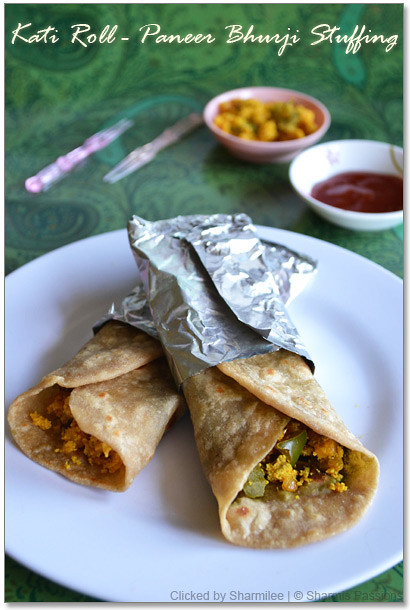

Katti Roll
A kati roll is a street-food dish originating from Kolkata, West Bengal, India. In its original form, it is a skewer-roasted kebab wrapped in a paratha bread, although over the years many variants have evolved all of which now go under the generic name of kati roll.

Incredients
- 1 1/4 cups whole wheat flour
- 1/4 cup maida
- salt to taste
- 1 teaspoon oil
- milk as needed to knead the dough
- 3/4 cup mixed vegetables I used carrot, capsicum and beans & Chop it lengthwise
- a pinch turmeric powder
- 1/2 teaspoon garam masala powder or chat masala
- 1 teaspoon ginger green chilli paste See recipe below
- 1 tablespoon lemon juice
- 2 tablespoon green chutney
- 1 onion finely sliced
- 1 tablespoon oil
- salt to taste